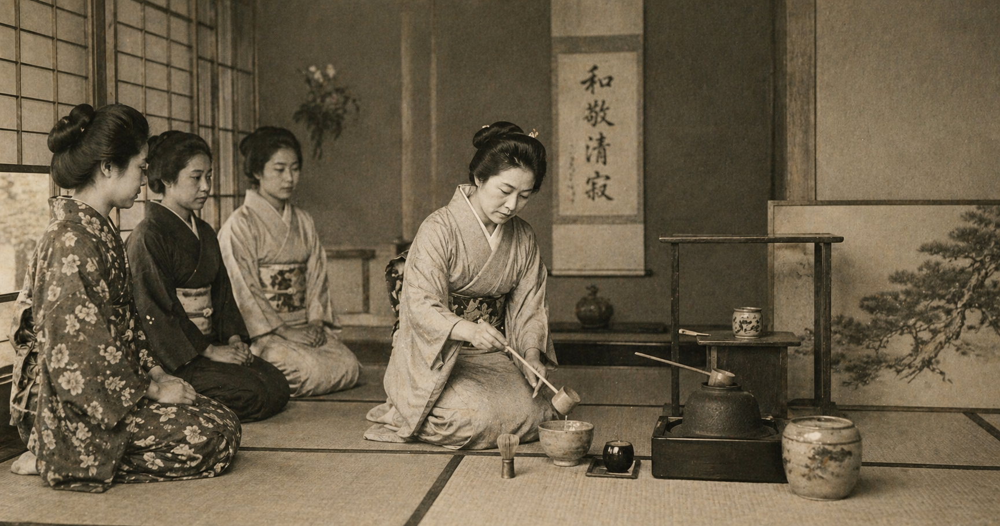

THE HISTORY
Matcha and loose leaf tea have histories that stretch back centuries, rooted in ritual, mindfulness, and cultural significance. Matcha, in particular, traces its origins to China during the Tang Dynasty, where tea leaves were steamed and formed into bricks. This method later evolved in Japan, where Zen Buddhist monks refined the practice into what we now recognize as matcha—finely ground green tea powder whisked into water. It became central to the Japanese tea ceremony, a meditative practice that emphasized presence, respect, and intentionality. Every movement, from preparing the tea to serving it, was considered an expression of harmony and care.
Loose leaf tea shares a similarly rich lineage. Unlike mass-produced tea bags, loose leaf tea preserves the integrity of the whole leaf, allowing for a more complex and nuanced flavor. Across cultures—from Chinese gongfu tea ceremonies to British afternoon tea traditions—loose leaf tea has long been valued not just as a beverage, but as an experience. The way tea is sourced, prepared, and enjoyed varies widely, yet the common thread is a deep appreciation for quality and craft.

As global trade expanded and cultures began to intersect, tea found its way into the Western world. Initially introduced through trade routes and colonial exchanges, tea quickly became a staple in many Western societies. However, as demand grew, convenience often took precedence over tradition. Tea bags and pre-flavored blends became more common, offering accessibility but often sacrificing the depth and authenticity that defined traditional tea practices.
In recent years, there has been a noticeable shift. As consumers become more curious and intentional about what they consume, there has been a renewed interest in the origins and craftsmanship behind everyday beverages. Matcha, once reserved for ceremonial use, began to re-emerge as a modern staple—celebrated not only for its flavor but for its cultural roots and health benefits. Similarly, loose leaf teas have gained popularity as people seek more authentic and elevated experiences beyond mass-produced options.
Social media and global café culture have played a significant role in this resurgence. The visual appeal of vibrant green matcha and beautifully brewed teas has captured attention worldwide, sparking curiosity and encouraging exploration. What started as a niche interest has grown into a global movement—one that blends tradition with modern lifestyle. Yet, as these drinks continue to evolve, the importance of understanding their origins becomes even more essential.
Today, matcha and loose leaf tea exist at the intersection of history and innovation. They are no longer confined to their places of origin but are shared and reinterpreted across cultures. This widespread appreciation has created an opportunity—not just to enjoy these beverages, but to engage with their stories. To understand where they come from, how they are made, and why they have endured for so long.
As they continue to grow in popularity in the Western world, matcha and loose leaf tea represent more than just a trend. They reflect a broader shift toward mindfulness, quality, and connection—values that have always been at the heart of their tradition.